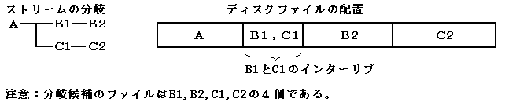

- 先読みできるストリームの合計は、CDバッファ容量(最大200セクタ)までです。従って、その容量を越えてしまって先読みできなかったストリームについては、遅れなく分岐することができなくなります。
- (1)分岐候補の非インタリーブ
- Aの分岐候補がB,Cで、ディスク上のファイル配置が図4.1のようになっていると、先読みできるファイルはBだけになります。
Aの先読み分だけでB,Cにシーク・分岐しても間に合うならば問題はありません。しかし、分岐の選択タイミングをより遅らせるために、B,C両方とも先読みする必要があるようであれば、この例だとCに遅れなく分岐できなくなります。
図4.1 分岐候補の非インタリーブ(Cの先読みが不可能)
- (2)分岐候補の全体的なインタリーブ
- Aの再生後、遅れなくB,Cに分岐させるには、図4.2のようにAの次にBとCをインタリーブして配置する方法があります。
図4.2 分岐候補の全体的なインタリーブ(B，Cの全部)
- (3)分岐候補の部分的なインタリーブ
- 図4.3のように、BをB1,B2に、CをC1,C2に分割し、B1とC1だけをインタリーブして配置する方法もあります。
この場合、B,Cの一部(B1,C1)だけをインタリーブすれば良く、B2,C2へのシークが可能で独立性が高くなります。ただし、ファイルの分割が必要になります。
図4.3 分岐候補の部分的なインタリーブ(B,Cの一部)
